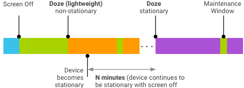

In this document
Battery life is a perennial user concern. To extend battery life, Android continually adds new features and optimizations to help the platform optimize the off-charger behavior of applications and devices.
Android includes the following battery life enhancements:
- App Standby. The platform can place unused applications in App Standby mode, temporarily restricting network access and deferring syncs and jobs for those applications.
- Doze. The platform can enter a state of deep sleep (periodically resuming normal operations) if users have not actively used their device (screen off and stationary) for extended periods of time. Android 7.0 also enables Doze to trigger a lighter set of optimizations when users turn off the device screen yet continue to move around.
- Exemptions. System apps and cloud messaging services preloaded on a device are typically exempted from App Standby and Doze by default (although app developers can intent their applications into this setting). Users can exempt applications via the Settings menu.
The following sections describe these enhancements.
App Standby
App Standby extends battery life by deferring background network activity and jobs for applications the user is not actively using.
App Standby lifecycle
The platform detects inactive applications and places them in App Standby until the user begins actively engaging with the application.
| Detection | During App Standby | Exit |
|---|---|---|
The platform detects an application is inactive when the device is not charging and the user has not launched the application directly or indirectly for a specific amount of clock time as well as a specific amount of screen-on time. (Indirect launches occur when a foreground app accesses a service in a second app.) |
The platform prevents applications from accessing the network more than once a day, deferring application syncs and other jobs. |
The platform exits the app from App Standby when:
|
Active applications are unaffected by App Standby. An application is active when it has:
- A process currently in the foreground (either as an activity or foreground service, or in use by another activity or foreground service), such as notification listener, accessibility services, live wallpaper, etc.
- A notification viewed by the user, such as in the lock screen or notification tray.
- Explicitly been launched by the user.
An application is inactive if none of the above activities has occurred for a period of time.
Testing App Standby
You can manually test App Standby using the following ADB commands:
$ adb shell dumpsys battery unplug $ adb shell am set-idle packageName true $ adb shell am set-idle packageName false $ adb shell am get-idle packageName
Doze
Doze extends battery life by deferring application background CPU and network activity when a device is unused for long periods.
Idle devices in Doze periodically enter a maintenance window, during which apps can complete pending activities (syncs, jobs, etc.). Doze then resumes sleep for a longer period of time, followed by another maintenance window. The platform continues the Doze sleep/maintenance sequence, increasing the length of idle each time, until a maximum of a few hours of sleep time is reached. At all times, a device in Doze remains aware of motion and immediately leaves Doze if motion is detected.
Android 7.0 extends Doze to trigger a lighter set of optimizations every time a user turns off the device screen, even when the user continues to move around, enabling longer lasting battery life.
System services (such as telephony) may be preloaded and exempted from Doze by default. Users can also exempt specific applications from Doze in the Settings menu. By default, Doze is disabled in the Android Open Source Project (AOSP). For details on enabling Doze, see Integrating Doze.
Doze requirements
Doze support requires the device has a cloud messaging service, such as Google Cloud Messaging (GCM). This enables the device to know when to wake from Doze.
Full Doze support also requires a Significant Motion Detector (SMD) on the device; however, the lightweight Doze mode in Android 7.0 does not require an SMD. If Doze is enabled on a device that:
- Has an SMD, full Doze optimizations occur (includes lightweight optimizations).
- Does not have an SMD, only the lightweight Doze optimizations occur.
Doze lifecycle
Doze begins when the platform detects the device is idle and ends when one or more exit criteria activities occur.
| Detection | During Doze | Exit |
|---|---|---|
The platform detects a device is idle when:
Doze mode does not engage when the device is plugged into a power charger. |
The platform attempts to keep the system in a sleep state, periodically resuming normal operations during a maintenance window then returning the device to sleep for longer repeating periods. During sleep, the following restrictions are active:
|
The platform exits the device from Doze when it detects:
Notifications do not cause the device to exit from Doze. |
Android 7.0 extends Doze by enabling a lightweight sleep mode during screen off, before the device is idle.

Figure 1. Doze modes for non-stationary and stationary devices.
| Action | Doze | Lightweight Doze |
|---|---|---|
| Trigger | Screen off, on battery, stationary | Screen off, on battery (unplugged) |
| Timing | Successively increasing periods with maintenance | Repeated N-minute periods with maintenance windows |
| Restrictions | No network access, wake lock, or GPS/Wi-FI scan. Alarms and jobs/syncs deferred. | No network access. Jobs/syncs deferred except during maintenance windows. |
| Behavior | Only high-priority push notification messages received. | All real-time messages (instant messages, calls, etc.) received. High-priority push notification message enables temporary network access. |
| Exit | Motion, screen on, or alarm clock alarm. | Screen on. |
Interaction with App Standby
- Time spent in Doze does not count towards App Standby.
- While the device is in Doze, idle applications are allowed to perform normal operations at least once a day.
Integrating Doze
When Doze is enabled, devices that support SENSOR_TYPE_SIGNIFICANT_MOTION will perform full Doze optimizations (includes lightweight optimizations); devices without an SMD will perform only lightweight Doze optimizations. Android automatically selects the appropriate Doze optimizations and no vendor configuration is necessary.
To enable Doze for a device, perform the following tasks:
- Confirm the device has a cloud messaging service installed.
- In the device overlay config file
overlay/frameworks/base/core/res/res/values/config.xml, setconfig_enableAutoPowerModesto true:bool name="config_enableAutoPowerModes">true</bool>
In AOSP, this parameter is set to false (Doze disabled) by default.
- Confirm that preloaded apps and services:
- Use the
power-saving
optimization guidelines. For details, see Testing and
optimizing applications.
OR
- Are exempted from Doze and App Standby. For details, see Exempting applications.
- Use the
power-saving
optimization guidelines. For details, see Testing and
optimizing applications.
- Confirm the necessary services are exempted from Doze.
Tips
- If possible, use GCM for downstream messaging.
- If your users must see a notification right away, use a GCM high priority message.
- Provide sufficient information within the initial message payload (to avoid unnecessary subsequent network access).
- Set critical alarms with setAndAllowWhileIdle() and setExactAndAllowWhileIdle().
Testing and optimizing applications
Test all applications (especially preloaded applications) in Doze mode. For details, refer to Testing Doze and App Standby.
Note: MMS/SMS/Telephony services function independently of Doze and will always wake client apps even while the device remains in Doze mode.
Exempting applications
You can exempt applications from being subject to Doze or App Standby. Exemptions may be needed in the following use cases:
- OEM using non-GCM Cloud Messaging platform
- Carrier using non-GCM Cloud Messaging platform
- Third-party application using non-GCM Cloud Messaging platform
Warning: Do not exempt apps to avoid testing and optimizing. Unnecessary exemptions undermine the benefits of Doze and App Standby and can compromise the user experience, so we strongly suggest minimizing such exemptions as they allow applications to defeat beneficial controls the platform has over power use. If users become unhappy about the power consumption of these apps, it can lead to frustration, bad experiences (and negative user reviews for the app), and customer support questions. For these reasons, we strongly recommend that you do not exempt third-party applications and instead exempt only cloud messaging services or apps with similar functions.
Apps exempted by default are listed in a single view within the Settings > Battery menu. This list is used for exempting the app from both Doze and App Standby modes. To provide transparency to the user, the Settings menu MUST show all exempted applications.
Users can manually exempt apps via Settings > Battery > Battery optimization > All apps and then selecting the app to turn off (or back on) optimization. However, users cannot unexempt any application or service that is exempted by default in the system image.